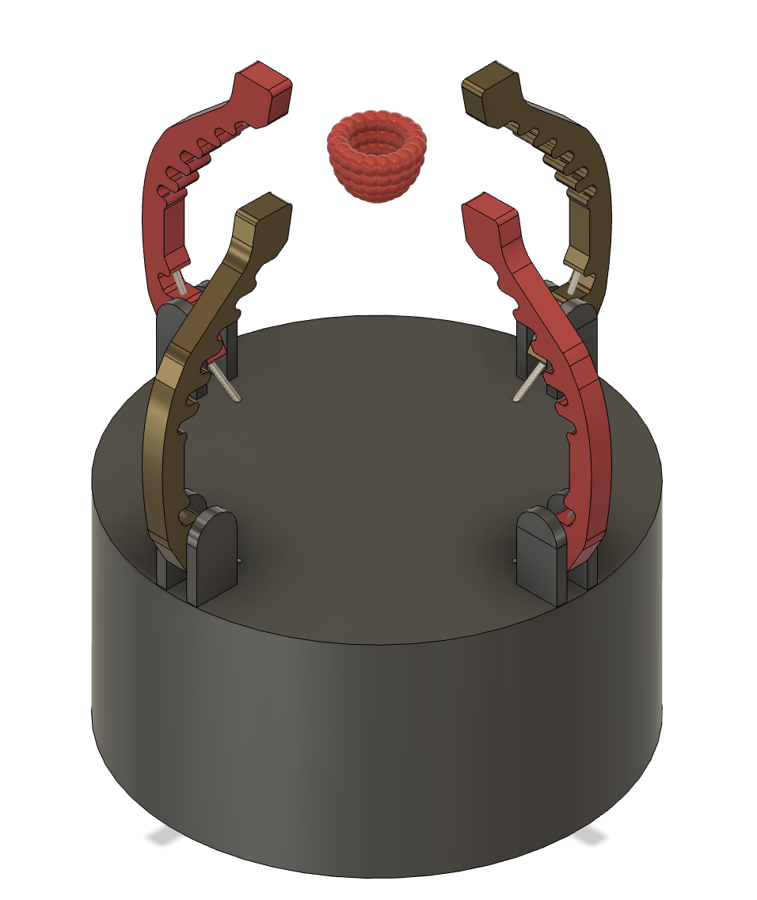
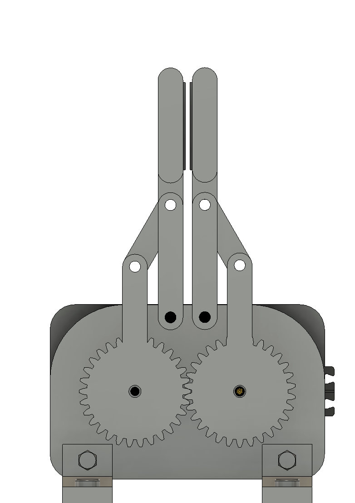
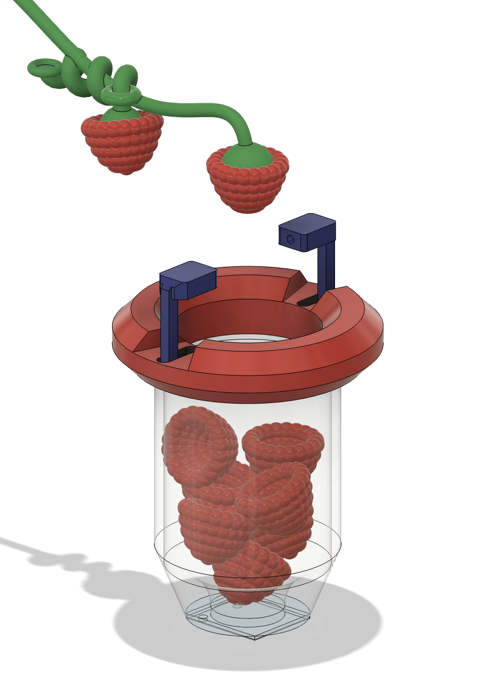
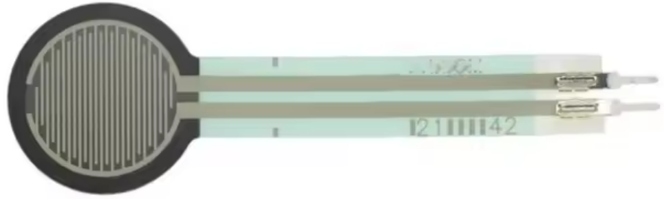
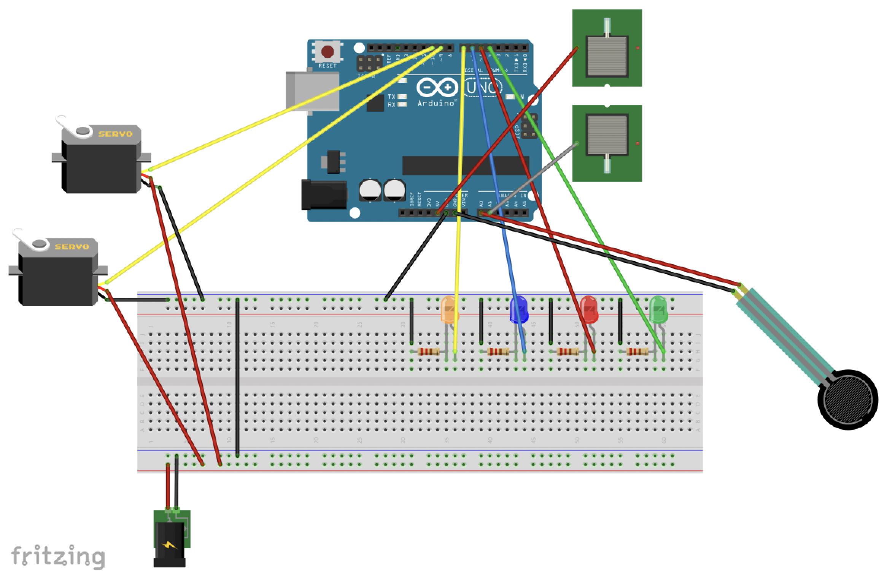
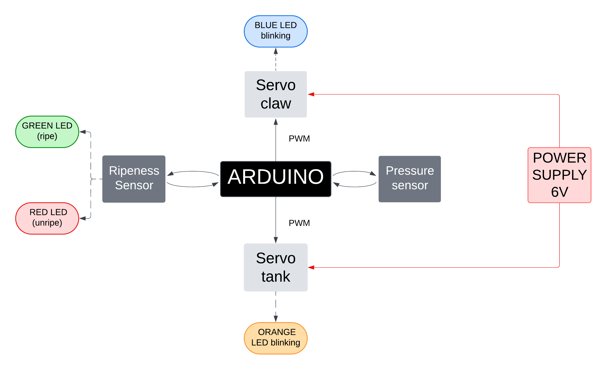

Raspberry Gripper
Development of a compact robotic gripper for raspberry harvesting, designed to pick delicate fruit without damage while integrating ripeness detection, pressure control and temporary onboard storage.

Project Overview
This project focused on the design and prototyping of a raspberry harvesting gripper for robotic use at EPFL. The challenge was to handle a fragile fruit with a compact mechanism able to grip gently, identify ripeness and remain easy to integrate on a robot.
The final concept combines a two-jaw side gripping system, sensing for pressure and conductivity, and an integrated storage box to avoid repeated back-and-forth motions during harvesting.
Key Contributions
- Mechanical design and integration of the final gripper architecture
- Contribution to concept generation, comparison and selection
- Integration of sensing, electronics and Arduino-based control
- Work on sustainable material choices and reuse-oriented design decisions
- Development of a compact storage solution to improve harvesting efficiency
Concept Development
The project started with five different gripper concepts exploring tendon-like fingers, rack-and-pinion motion, gear-driven linkages, three-finger solutions and integrated storage approaches.
After screening and weighted scoring, the final solution combined the overall architecture of concept B, the grip-related qualities of concept C, and the reservoir idea from concept E.
Final Mechanism
The final gripper uses a parallel jaw mechanism driven by a compact servo motor. Two gears transmit motion to a linkage system that converts rotation into a controlled translational closing motion of the jaws.
The fruit is gripped from the side, a practical approach for robot positioning during harvesting, and then transferred into an onboard tank that stores several raspberries before release.
Sensors & Control
- Pressure sensing integrated in the gripping area to avoid damaging the fruit
- Conductivity-based ripeness detection implemented directly on the gripper
- Arduino-based control of sensors, servomotors and operating logic
- Software-controlled motion used instead of mechanical end-stop switches
- System designed to balance delicacy, reliability and simplicity
Materials & Manufacturing
- 3D printed structural parts for fast and low-cost prototyping
- PETG gripping parts improved with sandpaper for better adhesion
- Laser-cut MDF plates used for selected non-critical flat components
- Conductive wires recovered from old cables for the ripeness sensor
- Compact assembly including Arduino, servomotors, pressure sensor and integrated reservoir
Sustainability & Scalability
Sustainability was addressed through material reuse, low-cost prototyping and simple sensing solutions. Recycled wires and reused materials were incorporated where possible, while the integrated storage reduced unnecessary robot motion during harvesting.
The report also highlights future improvements such as FEM-guided design, topology optimization, reduced glue usage, and a transition from 3D printing to injection molding for larger-scale production.
Design Reflection
The final design remained intentionally simple while still performing the key harvesting tasks effectively. The pressure sensing worked reliably and helped maintain gentle handling of the fruit.
The main limitation identified was the conductivity-based ripeness check, which was reliable but slower in use. A future redesign could consider a color sensor to increase harvesting speed and improve competitive performance.
Project Video
Replace the video path if needed depending on where you store the .mov file in your portfolio structure.
Image Gallery





